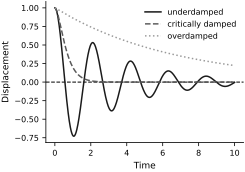
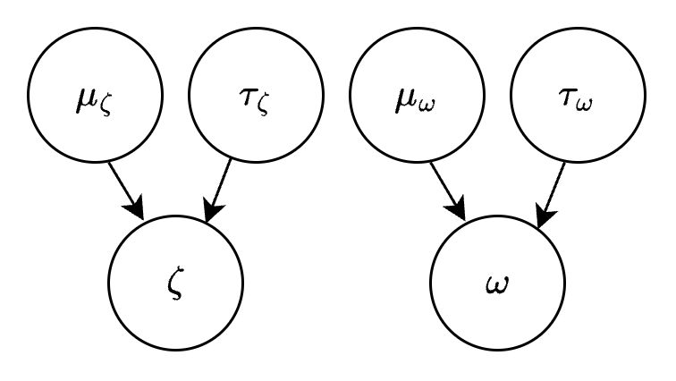
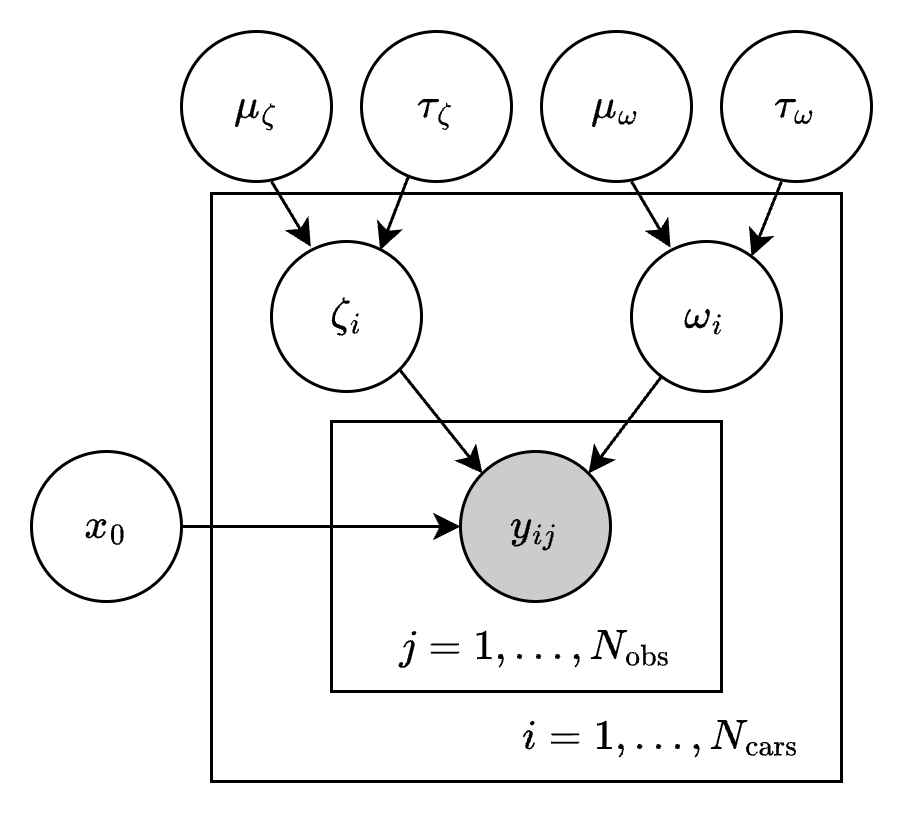
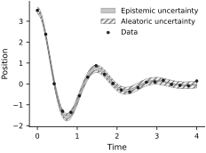
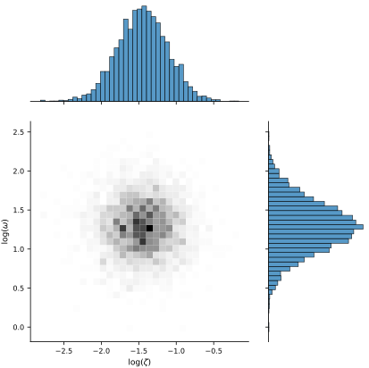
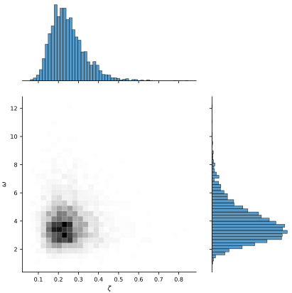
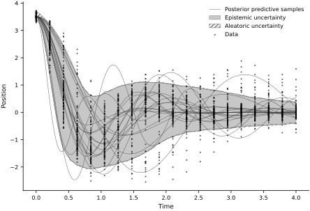
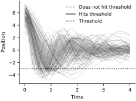
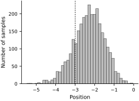

Population uncertainty#
Cars on a bumpy road#
There is a bump on the road that causes cars to oscillate after hitting it. The nature of the oscillation depends on the car’s mass and suspension system. You’ve installed a camera on the highway that can capture snapshots of each car’s vertical displacement. You capture 20 snapshots per car before they drive out of the camera’s view. Suppose you want to infer the cars’ suspension dynamics parameters (with uncertainty).
First, we need a forward model for the vertical displacement \(x\) of a car. We’ll model this as a damped harmonic oscillator
where \(\zeta\) is the damping ratio and \(\omega\) is the natural frequency. Let \(x(t; x_0, \zeta, \omega)\) be the vertical position of a car at time \(t\), which is obtained by solving the above ODE.
This ODE happens to have an analytic solution. Let’s code it up and visualize:
array([<Axes: xlabel='Time', ylabel='Displacement'>], dtype=object)

Hierarchical suspension model#
Population distribution#
Before seeing any road data, the population distribution describes uncertainty about the damping ratio \(\zeta\) and natural frequency \(\omega\) of a randomly selected car. We write it as
where \(\theta_\text{pop}\) contains the population parameters. We choose the conditional prior
where \(\operatorname{Normal}(m,s^2)\) denotes a normal distribution with mean \(m\) and standard deviation \(s\). Thus \(\mu_\zeta\) and \(\tau_\zeta\) are the population mean and standard deviation of \(\log \zeta\), with analogous definitions for \(\omega\). The population parameters are
We assign the hyperpriors
This is the basic hierarchical pattern from the preceding section with \(\phi=\theta_\text{pop}\) and local parameter \(\theta_i=(\zeta_i,\omega_i)\). The following directed acyclic graph shows how the four shared population parameters govern the suspension parameters of car \(i\):

Connecting the population distribution to the data#
The implementation below uses \(N_\mathrm{cars}=100\) cars and \(N_\mathrm{obs}=20\) displacement measurements per car. We assume that the initial displacement \(x_0\) is shared by all cars and lies between 0 and 5 centimeters:
The observed displacement of car \(i\) at time \(t_{ij}\) is
where the measurement noise \(\sigma\) is known.
The full graphical model expands the data node of the basic pattern into repeated measurements. The outer plate contains one pair \((\zeta_i,\omega_i)\) for each car \(i=1,\ldots,N_\mathrm{cars}\), and the nested inner plate contains that car’s measurements \(y_{ij}\) for \(j=1,\ldots,N_\mathrm{obs}\). The population parameters and \(x_0\) lie outside the plates because they are shared. The known inputs \(t_{ij}\) and the known measurement standard deviation \(\sigma\) are omitted from the diagram.

We can write down the posterior as
where \(\boldsymbol{\zeta}=(\zeta_1,\ldots,\zeta_{N_\mathrm{cars}})\) and \(\boldsymbol{\omega}=(\omega_1,\ldots,\omega_{N_\mathrm{cars}})\) collect the physical parameters of all cars in the data set. Finally, we’ll transform all random variables to a single random vector \(\xi\) which lives in unconstrained space \(\mathbb{R}^d\).
Building the model with NumPyro#
We use NumPyro to construct both the log probability density \(p(\xi|\mathbf{t}, \mathbf{y})\) and the transformation \(\xi \mapsto (\theta_\text{pop}, \boldsymbol{\zeta}, \boldsymbol{\omega}, x_0)\).
The nested numpyro.plate contexts implement the same repeated structure as the two plates in the graphical model: the outer context indexes cars, and the inner context indexes observations within each car.
We begin by writing the model with NumPyro objects:
N_TIMES = 20
N_INDIVIDUALS = 100
MEASUREMENT_NOISE = 0.1
PARAMETERIZATION = 'centered'
times = jnp.linspace(0, 4, N_TIMES)
if PARAMETERIZATION == 'centered':
def model(obs, gamma, prior_only=False):
# Population parameters
mu_zeta = numpyro.sample("mu_zeta", dist.Normal(-2.0, 1.0))
tau_zeta = numpyro.sample("tau_zeta", dist.Exponential(10.0))
mu_omega = numpyro.sample("mu_omega", dist.Normal(0.0, 0.5))
tau_omega = numpyro.sample("tau_omega", dist.Exponential(10.0))
# Initial condition
x0 = numpyro.sample("x0", dist.Uniform(0, 5))
# Physical parameters
with numpyro.plate("individuals", N_INDIVIDUALS):
log_zeta = numpyro.sample("log_zeta", dist.Normal(mu_zeta, tau_zeta))
log_omega = numpyro.sample("log_omega", dist.Normal(mu_omega, tau_omega))
zeta = jnp.exp(log_zeta)
omega = jnp.exp(log_omega)
if not prior_only:
# Solve the ODE
solver = lambda zeta, omega: damped_harmonic_oscillator(t=times, x0=x0, v0=0.0, zeta=zeta, omega=omega)
x = vmap(solver, out_axes=-1)(zeta, omega)
# Observations
with numpyro.plate("observations", N_TIMES):
with numpyro.handlers.scale(scale=gamma):
y = numpyro.sample("y", dist.Normal(x, MEASUREMENT_NOISE), obs=obs)
return locals() # Returns a dict of all locally-defined variables
if PARAMETERIZATION == 'noncentered':
def model(obs, gamma, prior_only=False):
# Population parameters
mu_zeta = numpyro.sample("mu_zeta", dist.Normal(-2.0, 1.0))
tau_zeta = numpyro.sample("tau_zeta", dist.Exponential(10.0))
mu_omega = numpyro.sample("mu_omega", dist.Normal(0.0, 0.5))
tau_omega = numpyro.sample("tau_omega", dist.Exponential(10.0))
# Initial condition
x0 = numpyro.sample("x0", dist.Uniform(0, 5))
# Physical parameters
with numpyro.plate("individuals", N_INDIVIDUALS):
log_zeta_noncentered = numpyro.sample("log_zeta_noncentered", dist.Normal())
log_omega_noncentered = numpyro.sample("log_omega_noncentered", dist.Normal())
log_zeta = mu_zeta + tau_zeta*log_zeta_noncentered
log_omega = mu_omega + tau_omega*log_omega_noncentered
zeta = jnp.exp(log_zeta)
omega = jnp.exp(log_omega)
if not prior_only:
# Solve the ODE
solver = lambda zeta, omega: damped_harmonic_oscillator(t=times, x0=x0, v0=0.0, zeta=zeta, omega=omega)
x = vmap(solver, out_axes=-1)(zeta, omega)
# Observations
with numpyro.plate("observations", N_TIMES):
with numpyro.handlers.scale(scale=gamma):
y = numpyro.sample("y", dist.Normal(x, MEASUREMENT_NOISE), obs=obs)
return locals() # Returns a dict of all locally-defined variables
You can check that there are no syntax errors by sampling the model:
The model is syntactically valid. We now generate a synthetic data set. The synthetic values of \((\log\zeta,\log\omega)\) follow a correlated, mildly nonlinear joint distribution, whereas the fitted hierarchy assumes conditional independence given \(\theta_\text{pop}\). This deliberate misspecification makes the example a test of approximation rather than an exact model-recovery exercise.
Next, we obtain the probability density and transformation functions from NumPyro using the BlackJAX interoperability pattern (Cabezas et al., 2024):
We now have the NumPyro quantities needed for sampling with BlackJAX. To demonstrate, here is how to evaluate \(p(\xi|\mathbf{t}, \mathbf{y})\) at some point \(\xi\):
# Create a dummy ξ
xi = {
'mu_zeta': jnp.ones(()),
'tau_zeta': jnp.ones(()),
'mu_omega': jnp.ones(()),
'tau_omega': jnp.ones(()),
'log_zeta': jnp.ones((N_INDIVIDUALS,)),
'log_omega': jnp.ones((N_INDIVIDUALS,)),
'x0': jnp.ones(()),
}
joint_log_prob(xi)
Array(-334230.56120081, dtype=float64)
And here is how to transform xi to the original parameter ranges:
constrain(xi)
{'mu_zeta': Array(1., dtype=float64),
'tau_zeta': Array(2.71828183, dtype=float64),
'mu_omega': Array(1., dtype=float64),
'tau_omega': Array(2.71828183, dtype=float64),
'log_zeta': Array([1., 1., 1., 1., 1., 1., 1., 1., 1., 1., 1., 1., 1., 1., 1., 1., 1.,
1., 1., 1., 1., 1., 1., 1., 1., 1., 1., 1., 1., 1., 1., 1., 1., 1.,
1., 1., 1., 1., 1., 1., 1., 1., 1., 1., 1., 1., 1., 1., 1., 1., 1.,
1., 1., 1., 1., 1., 1., 1., 1., 1., 1., 1., 1., 1., 1., 1., 1., 1.,
1., 1., 1., 1., 1., 1., 1., 1., 1., 1., 1., 1., 1., 1., 1., 1., 1.,
1., 1., 1., 1., 1., 1., 1., 1., 1., 1., 1., 1., 1., 1., 1.], dtype=float64),
'log_omega': Array([1., 1., 1., 1., 1., 1., 1., 1., 1., 1., 1., 1., 1., 1., 1., 1., 1.,
1., 1., 1., 1., 1., 1., 1., 1., 1., 1., 1., 1., 1., 1., 1., 1., 1.,
1., 1., 1., 1., 1., 1., 1., 1., 1., 1., 1., 1., 1., 1., 1., 1., 1.,
1., 1., 1., 1., 1., 1., 1., 1., 1., 1., 1., 1., 1., 1., 1., 1., 1.,
1., 1., 1., 1., 1., 1., 1., 1., 1., 1., 1., 1., 1., 1., 1., 1., 1.,
1., 1., 1., 1., 1., 1., 1., 1., 1., 1., 1., 1., 1., 1., 1.], dtype=float64),
'x0': Array(3.65529289, dtype=float64)}
And unconstrain takes us back to unconstrained space:
eqx.tree_equal( unconstrain(constrain(xi)), xi )
Array(True, dtype=bool)
If the structure of xi is unclear, init_params.z gives the default unconstrained structure generated by NumPyro.
Sampling the hierarchical model posterior#
We set up NUTS with BlackJAX for this problem. First, let’s pick starting points for each sampling chain by sampling from the prior:
NUM_CHAINS = 3
# Here is how to sample from the prior (in unconstrained space)
@partial(jit, static_argnums=1)
def sample_prior_xi(key, num_samples):
s = numpyro.infer.Predictive(model, num_samples=num_samples)(key, *model_default_args)
xi = vmap(unconstrain)(s)
xi = {k: v for k, v in xi.items() if k in init_params.z.keys()}
return xi
initial_xis = sample_prior_xi(key, 3)
# Print the shapes of `initial_xis`
eqx.tree_pprint(initial_xis)
{
'log_omega': f64[3,100],
'log_zeta': f64[3,100],
'mu_omega': f64[3],
'mu_zeta': f64[3],
'tau_omega': f64[3],
'tau_zeta': f64[3],
'x0': f64[3]
}
The inference loop follows the BlackJAX change-of-variables pattern (Cabezas et al., 2024):
import blackjax
# @eqx.filter_jit
def inference_loop_multiple_chains(
key,
initial_states,
sampler_params,
log_prob_fn,
num_samples,
num_chains,
likelihood_scale_schedule
):
kernel = blackjax.nuts.build_kernel()
@eqx.debug.assert_max_traces(max_traces=1)
def step_fn(key, state, gamma, **params):
return kernel(key, state, lambda x: log_prob_fn(x, gamma), **params)
def one_step(states, fixed):
key, gamma = fixed
keys = jr.split(key, num_chains)
states, infos = jax.vmap(partial(step_fn, gamma=gamma, **sampler_params))(keys, states)
return states, (states, infos)
keys = jr.split(key, num_samples)
gammas = likelihood_scale_schedule(jnp.arange(num_samples))
fixed = (keys, gammas)
_, (states, infos) = lax.scan(one_step, initial_states, fixed)
return (states, infos)
The loop permits likelihood tempering through the scale \(\gamma\). In this example we keep \(\gamma=1\) throughout, so both warmup and sampling target the full posterior; no annealing is applied.
likelihood_scale_schedule = full_posterior_schedule
Finally, let’s run MCMC:
# Split the key for warmup and sampling
key, warmup_key, sample_key = jr.split(key, 3)
# Warmup
num_warmup = 1000
warmup_states, warmup_infos = inference_loop_multiple_chains(
warmup_key, initial_states, nuts_params, joint_log_prob_tempered, num_warmup, NUM_CHAINS, likelihood_scale_schedule
)
# Sample
num_samples = 1000
last_warmup_states = tree.map(lambda x: x[-1], warmup_states)
states, infos = inference_loop_multiple_chains(
sample_key, last_warmup_states, nuts_params, joint_log_prob_tempered, num_samples, NUM_CHAINS, lambda x: jnp.ones_like(x)
)
# Put the samples in a dictionary of arrays whose leading dimensions are NUM_CHAINS and NUM_INDIVIDUALS.
xi_samples_all_chains = {k: v.swapaxes(0, 1) for k, v in states.position.items()}
The MCMC chains are stored in xi_samples_all_chains:
eqx.tree_pprint(xi_samples_all_chains)
{
'log_omega': f64[3,1000,100],
'log_zeta': f64[3,1000,100],
'mu_omega': f64[3,1000],
'mu_zeta': f64[3,1000],
'tau_omega': f64[3,1000],
'tau_zeta': f64[3,1000],
'x0': f64[3,1000]
}
Here are the posterior sample histograms, trace plots, and R-hat convergence metric:

{kind=link}
{kind=link}
Remove any chains that look like they didn’t converge:
# NOTE: THIS CELL REQUIRES USER INPUT!
bad_chains = [] # Put the indices of any nonconvergent chains here to remove them. This will change run to run.
xi_samples, _ = remove_bad_chains(
samples=xi_samples_all_chains,
bad_chain_ind=bad_chains,
num_chains=NUM_CHAINS
)
And let’s plot the epistemic and aleatoric uncertainty in the cars’ vertical position (as a function of time):
array([<Axes: xlabel='Time', ylabel='Position'>], dtype=object)

Posterior predictive distribution for a new car#
For each posterior draw of the population parameters, we draw one new pair \((\zeta,\omega)\). These samples approximate the posterior predictive distribution of the suspension parameters for a new car:
# Get the samples for the population parameters
mu_zeta = samples['mu_zeta']
tau_zeta = samples['tau_zeta']
mu_omega = samples['mu_omega']
tau_omega = samples['tau_omega']
# Sample the posterior predictive distribution for a new car
key, key_zeta, key_omega = jr.split(key, 3)
log_zeta_pop_samples = dist.Normal(mu_zeta, tau_zeta).rsample(key_zeta)
log_omega_pop_samples = dist.Normal(mu_omega, tau_omega).rsample(key_omega)
# Transform to physical space
zeta_pop_samples = jnp.exp(log_zeta_pop_samples)
omega_pop_samples = jnp.exp(log_omega_pop_samples)
array([<Axes: xlabel='Time', ylabel='Position'>], dtype=object)



The posterior predictive samples cover the broad range of observed trajectories. This visual check is encouraging, but it is not evidence that the fitted population family is exact; the synthetic generator was deliberately chosen outside that family.
Population-level predictions#
Suppose there is another bump farther down the road, and a construction team will smooth it if more than 10% of cars cross the displacement threshold \(x=-3\) cm. We model the new bump’s initial displacement as \(x^\text{new}_0 \sim \mathcal{N}(5,1^2)\) cm, but no camera is available at that location. The fitted hierarchy allows us to propagate posterior uncertainty to this new setting.
We first visualize trajectories drawn from the posterior predictive distribution:
array([<Axes: xlabel='Time', ylabel='Position'>], dtype=object)

The following histogram shows the minimum position of each trajectory, \(\min_t\{x(t;x^\text{new}_0,\zeta,\omega)\}\), under the posterior predictive distribution:
array([<Axes: xlabel='Position', ylabel='Number of samples'>],
dtype=object)

Finally, we estimate the posterior predictive probability that a car will cross the threshold \(x=-3\) cm. If this value is greater than 0.1, we will send a construction team to smooth out the bump.
Probability that a car will hit the threshold is 0.18.
Exercises#
Use a smaller dataset (set
N_INDIVIDUALS=10). Do we still get a good approximation of the population distribution?Use fewer time points (set
N_TIMES=8). Do the MCMC chains all converge to the same posterior distribution? Why or why not?Increase the measurement noise (set
MEASUREMENT_NOISE=0.3). Do the MCMC chains all converge to the same posterior distribution? Why or why not?